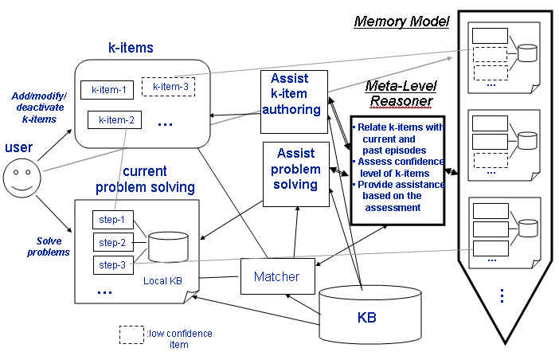
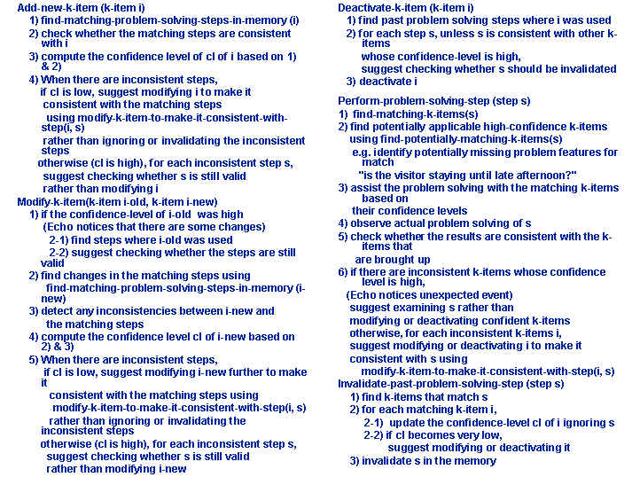

|
|

|
| Memory-Based Meta-Level Reasoning for Interactive Knowledge Capture | |
Research
In existing knowledge capture systems, knowledge entered by the user (called k-items) are treated equally and systems do not reflect on how each knowledge has been built and how well it has been used over time. The systems cannot provide effective assistance in making the k-items more useful and the resulting problem solving more successful. We present an an extension to knowledge acquisition interfaces that 1) keeps track of past problem solving episodes and relates them to each k-item 2) assesses the current status of k-items and problem solving using such relations and 3) provides assistance to improve k-items based on the assessment.Echo builds a memory model that relates each k-item to the problem solving episode it was built from, the episodes it matched, the episodes where it was actually used, and the episodes it can potentially contribute to. This model is used in assessing a k-item, checking if it can be confidently used, it conflicts with some successful results and needs some modifications, or it needs significant changes including deactivation. Based on this assessment, Echo guides the user in improving and maintaining the confidence levels of the k-items over time. The following shows the architecture of the system. 
The following algorithms show how memory model changes through knowledge authoring (add new k-item, modify a k-item, and deactivate/delete a k-item) and problem solving. They also show how Echo makes use of the memory model in providing assistance to the user. These algorithms are general and independent of a given application or the knowledge representation used. 